Oryx
Project Overview
A physics-driven Unreal Engine 5 simulation focused on force-based spaceship control, structured landing systems, and custom manual player physics.
This project explores fully physics-driven gameplay systems built entirely in C++ within Unreal Engine 5. The core focus was designing a thruster-based spaceship controller that applies forces at specific attachment points to generate real torque, rather than relying on transform manipulation. In addition to the ship system, the project includes a custom first-person physics pawn with manual gravity implementation, a structured multi-stage landing sequence controlled by a state machine, dynamic possession swapping between player and ship, and interactive object mechanics such as a gravity gun system. The primary goal of this simulation was to deeply explore force application, rotational math, physics constraints, and clean system transitions between multiple gameplay states.
My Role
I developed all gameplay systems and physics mechanics for this project using Unreal Engine 5 and C++. The focus was on building reusable, system-driven architecture rather than relying on Blueprint-only logic.
- Designed and implemented physics-based spaceship thruster system using AddForceAtLocation
- Built multi-stage landing state machine with structured transition logic
- Created custom manual gravity-based first-person pawn (no CharacterMovementComponent)
- Implemented dynamic possession system between player and spaceship
- Integrated Enhanced Input system with multiple mapping contexts
- Developed gravity gun interaction hooks with rotation and snap controls
The technical focus of this project was accurate force simulation, clean state management, and building modular gameplay systems that interact reliably under physics constraints.
Key Technical Highlights
- Physics-Based Thruster System: Applied directional forces at individual thruster components using AddForceAtLocation to generate torque-based movement and rotational control.
- Circular Mouse Steering Implementation: Constrained mouse input within a configurable radius to normalize directional control and drive smooth pitch, yaw, and roll interpolation.
- Multi-Stage Landing State Machine: Implemented custom ELandingStage enum handling rotation alignment, approach, braking, descent, and final physics locking.
- Physics Lock & DOF Constraints: Dynamically toggled physics simulation and constrained all axes upon landing to eliminate drift and ensure stable docking.
- Custom Manual Gravity System: Implemented gravity, acceleration smoothing, ground detection via line trace, and terminal velocity clamping without using CharacterMovementComponent.
- Dynamic Possession & Input Context Switching: Swapped player control between ship and pawn while updating Enhanced Input mapping contexts and cursor behavior.
Gameplay Highlights

Hybrid Physics Ship Controller
A hybrid spaceship movement system combining physics-driven thrust for translation with smooth interpolated rotation based on circular mouse steering. Linear motion is handled through force application, while rotation is manually interpolated for responsive directional control.
Why it’s done this way
- Maintains realistic acceleration using physics forces.
- Prevents unstable physics-based spinning by controlling rotation manually.
- Allows tighter, more responsive mouse-based steering.
- Players can exit the ship while landed, spawning and transferring control to their character.
How it works
- Thruster scene components define force application points.
AddForceAtLocation()applies forward and side thrust.- Mouse input is clamped within a circular radius for normalized steering.
FMath::RInterpTo()smoothly rotates the ship toward a target rotation.- Niagara FX activate dynamically based on active thrusters.
OnExitShip()spawns the player beside the ship and restores their control.
Code Snippets
RestrictMouseToCircle()– Normalizes mouse offset for directional control.UpdateRotation()– Interpolates toward pitch/yaw/roll targets.ApplyThrusters()– Applies force at thruster component locations.OnExitShip()– Transfers control from ship back to the player pawn.
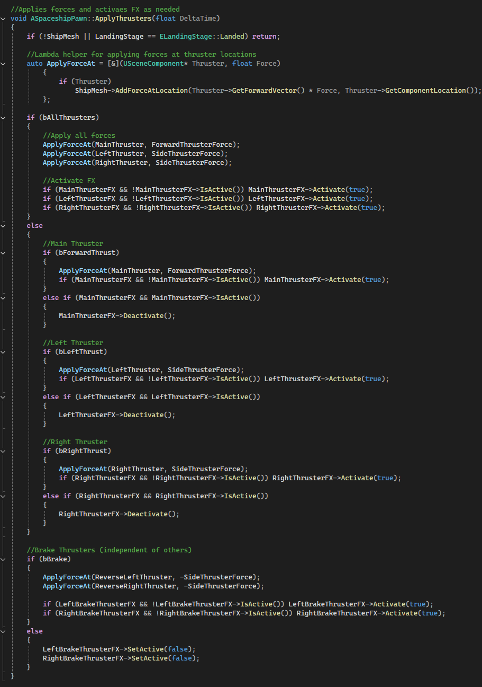
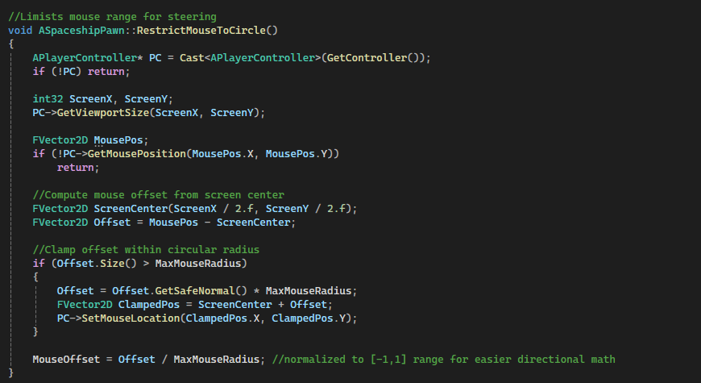
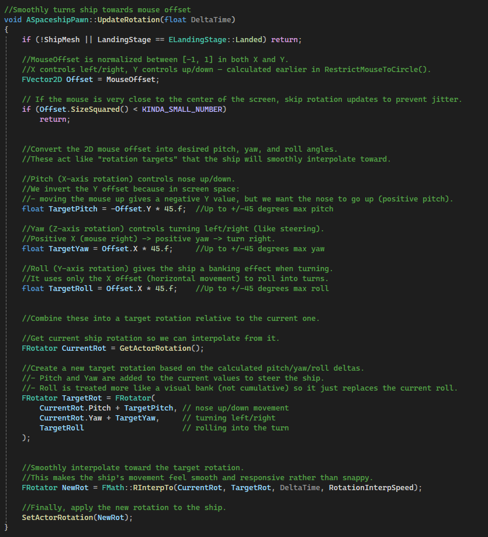
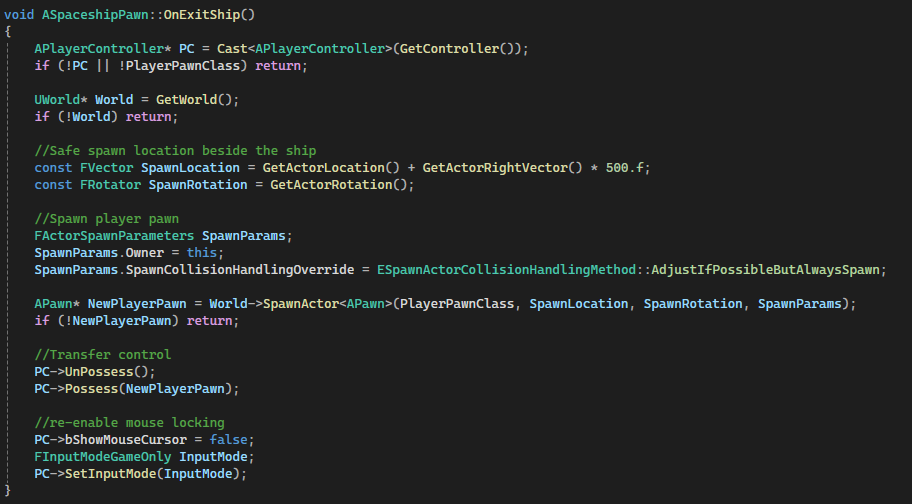

Multi-Stage Landing Sequence
A procedural landing system for spaceships that guides the player through approach, alignment, braking, and descent onto a landing pad. The sequence temporarily overrides normal controls, smoothly interpolates rotation, and locks the ship physically once landed.
Why it’s done this way
- Ensures a smooth, cinematic landing experience without abrupt movement.
- Prevents collisions or misalignment by guiding the ship through predefined stages.
- Automatically locks the ship on the pad for player boarding or takeoff.
How it works
LandingTriggerdetects when the ship is above a landing pad.- Player presses
Eto initiate landing, settingbIsLanding = true. -
Landing proceeds through
ELandingStagestates:RotateToPad– Rotate to face the pad.MoveToPad– Approach pad along forward vector.ApplyBrakes– Reduce speed and activate brake FX.AlignRotation– Match pad yaw and horizontally drift into position.Descend– Lower vertically to pad surface and lock.Landed– Ship is immobilized and ready for player exit or takeoff.
- Niagara FX are toggled dynamically for thrusters and brakes during stages.
LockShipOnPad(true)freezes physics once landed.
Code Snippets
StartLanding(ALandingPad* LandingPad)– Initializes landing and disables normal thrusters.LandingSequence(float DeltaTime)– Handles stage-based interpolation, braking, and descent.LockShipOnPad(bool bLock)– Enables/disables physics and constrains the ship on the pad.
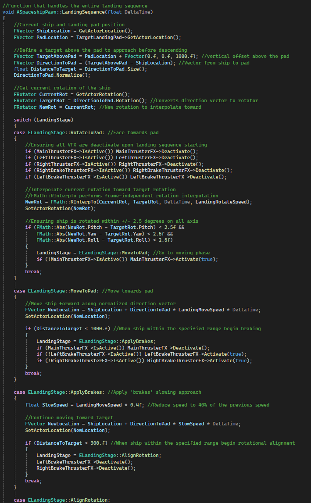
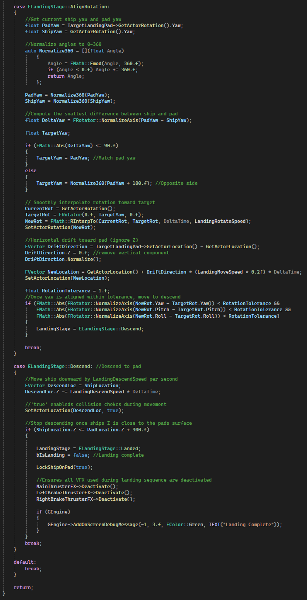
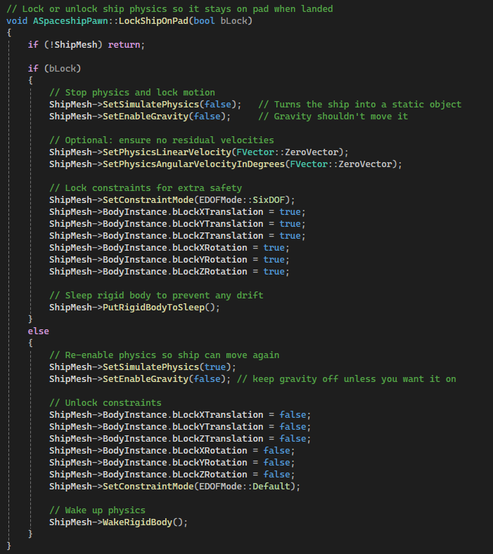
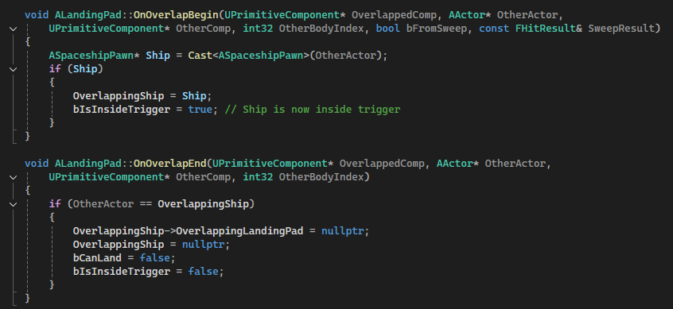
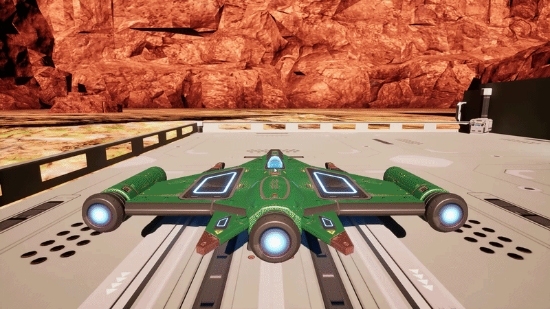
Player Controller & Input Handling
Handles player movement, camera rotation, jumping, and interactions with the gravity gun. Movement uses physics-based velocity with smooth acceleration, while camera rotation is manually controlled for precise first-person control. Also handles detecting nearby ships for boarding.
Why it’s done this way
- Physics-based capsule allows smooth collisions and manual gravity control.
- Manual camera rotation gives precise pitch and yaw control without unwanted rotations.
- Input system uses Enhanced Input for flexible bindings.
- Nearby ship detection uses a sphere overlap for seamless boarding interaction.
How it works
Tick()applies manual gravity and updates horizontal velocity.Look()rotates the pawn (yaw) and camera (pitch) independently.- Movement input is smoothed via
CurrentHorizontalVelocityand acceleration. CheckGrounded()uses a line trace to determine if the player is on the ground.- Gravity gun input functions directly call methods on the attached
GravityGunactor. TryBoardShip()finds the nearest ship and triggers boarding logic.
Code Snippets
ForwardPressed/Released()– Updates MoveInput.X based on input.Look()– Rotates pawn yaw and camera pitch independently.Tick()– Applies gravity, smooth acceleration, and sets capsule velocity.TryBoardShip()– Detects nearby ship and destroys the gravity gun before boarding.
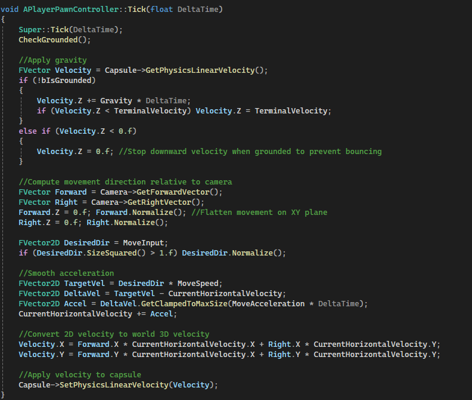
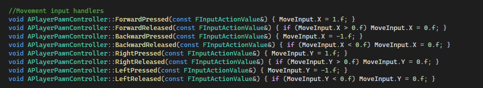
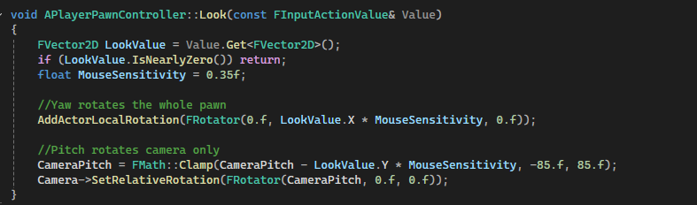
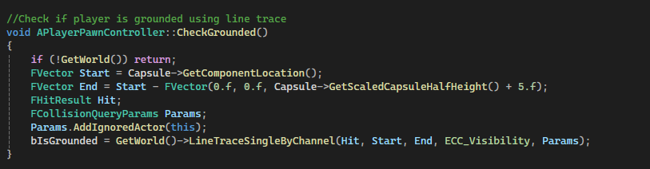
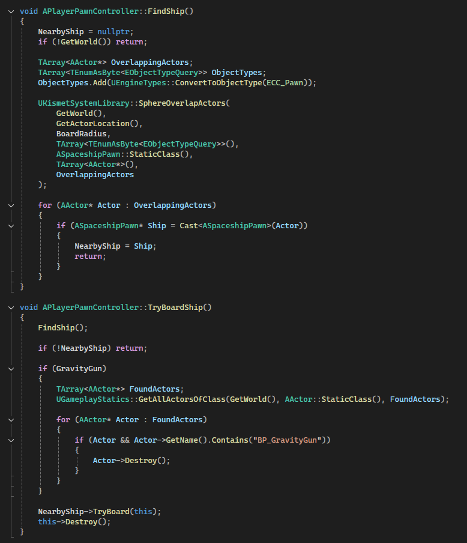
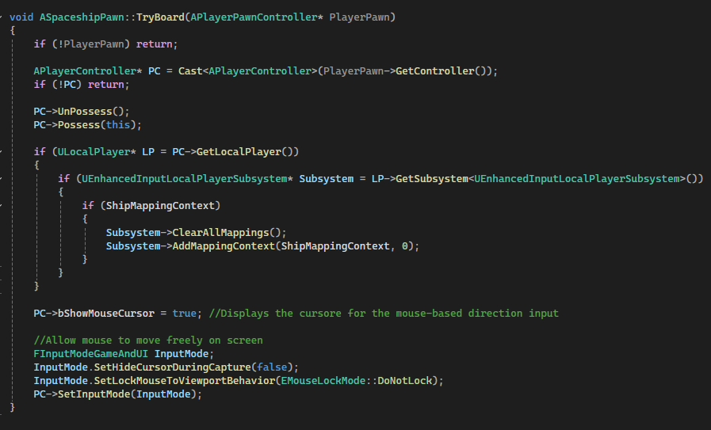
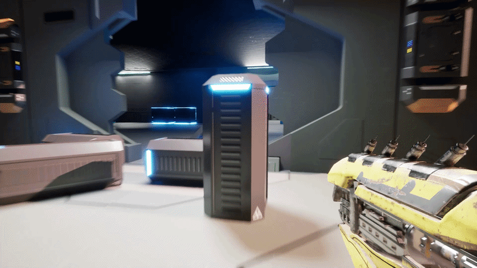
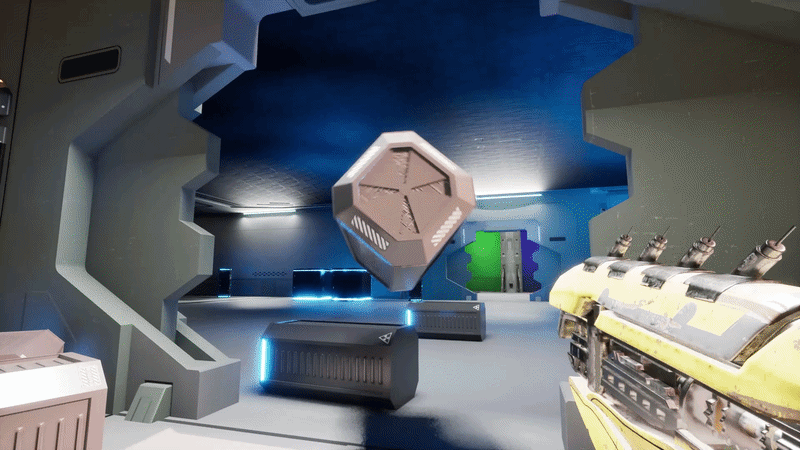
Gravity Gun
A versatile physics-based gravity gun allowing the player to pick up, rotate, spin, snap, and launch objects within the environment. Smooth physics interactions ensure objects respond naturally while held or thrown.
Why it’s done this way
- Enables intuitive manipulation of physics objects in first-person view.
- Combines manual rotation, snapping, and spinning for precise control.
- Objects can be launched dynamically, enhancing puzzle and combat mechanics.
How it works
- Line trace detects objects in front of the player within a configurable range.
UPhysicsHandleComponentmoves objects smoothly based on camera position.- Held objects can be rotated manually or snapped to horizontal/vertical/forward orientations.
- Objects can spin continuously at a configurable speed with smooth acceleration.
AddImpulse()fires objects forward with configurable force.
Code Snippets
ToggleGrab()– Grab or release objects dynamically.StartSpin()/StopSpin()– Control continuous spinning of held objects.SnapRotationToHorizontal()/Vertical()/Forward()– Snap held objects to standard orientations.FireObject()– Launch objects forward using physics impulse.
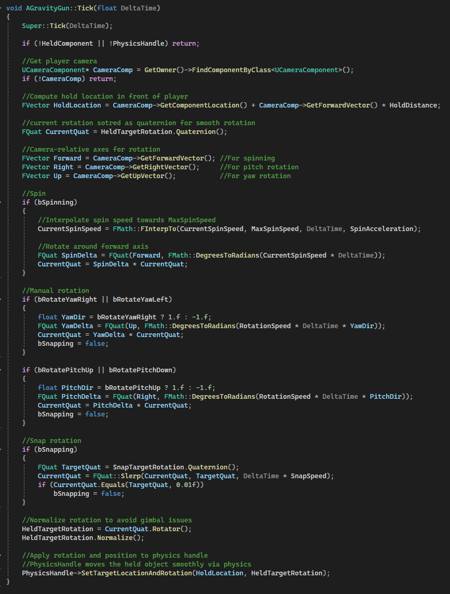
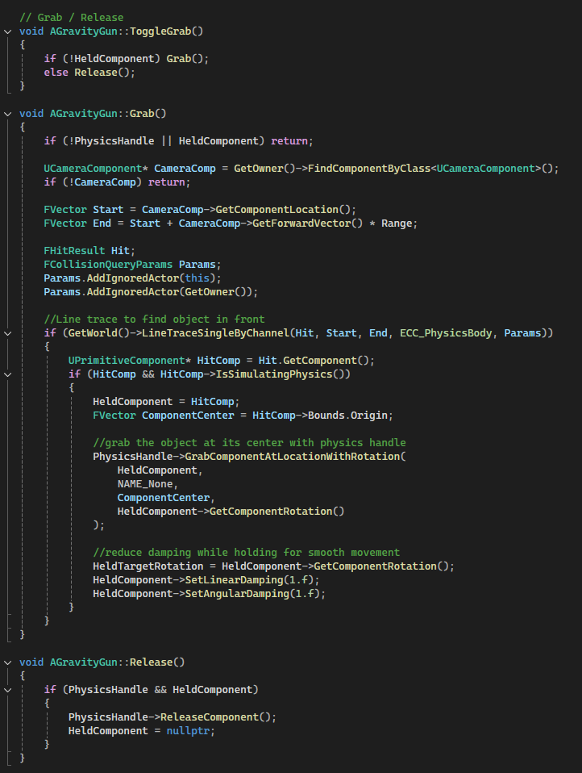
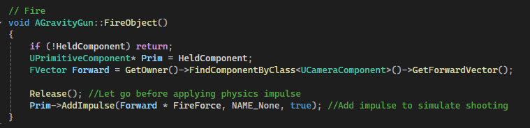
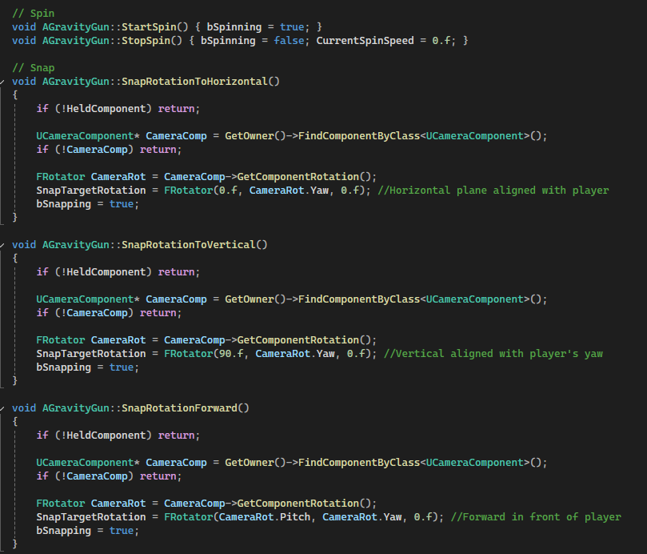